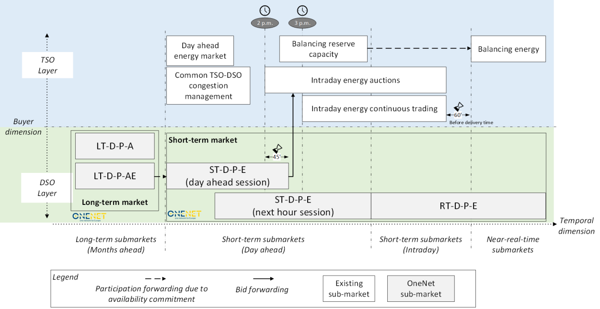

The journey
Four questions guide the discussion before the framework
Four short questions introduce the proposal before the five pillars.
A shared grammar for market design choices.
Why does it matter?Distributed flexibility creates value only when markets and networks coordinate.
Who needs a common language?Operators, regulators, market parties, active customers, and platform designers.
Where can it apply?Local flexibility, harmonised products, market phases, and dashboard interfaces.
What is the proposal?
A market framework is not a diagram. It is a grammar for change.
Flexibility markets differ in services, products, actors, timing, and grid needs. This framework gives them a common language across architecture, coordination, clearing, operation, and network representation.
The goal is not one market model, but transparent and comparable design choices.
Why does it matter?
Flexibility is a coordination problem before it becomes a market product.
The same distributed resource can serve local DSO needs and wider system markets.
The key question is how interacting markets share flexibility without conflict.
Who needs a common language?
The framework connects actors who often see only one part of the market
Where can it be applied?
From real markets to comparable design choices
Use the framework for local flexibility markets, TSO–DSO coordination, multi-level market models, bid forwarding, and harmonised market phases.
Illustrative case
Case example — from five filled Theoretical Market Framework tables to one market-architecture view
A worked case shows the process: complete the five pillar tables with consistent market labels, then translate them into one architecture view.

How to fill the tables and translate them into the figure
Keep the same Market 1–4 labels across all five tables. Record only known information; use Additional Information for assumptions, exceptions, and pairwise conditions.
- 1. Pillar 1 defines each market: timing, product, location, and actors. Each market becomes a block.
- 2. Keep the same labels in Pillars 2–5 to describe coordination, clearing, operation, and network constraints.
- 3. Use “Not applicable” where needed and record uncertainty in Additional Information.
- 4. Position blocks in time using GOT/GCT/MTU and by layer using buyer, operator, and location.
- 5. Draw links only when coordination rules support them; use the remaining pillars to explain how the sessions work.
From table entries to the figure
| Filled Theoretical Market Framework table input | What it determines | Visible result in the case figure |
|---|---|---|
| Pillar 1 — sub-markets + timing | Number of blocks and time position | Long-term, day-ahead/intraday and near-real-time placement |
| Pillar 1 — service/product + actors | Purpose and market layer | Meaning of each block and its buyer/system-operator layer |
| Pillar 2 — commitment/forwarding | How markets interact | Participation or bid-forwarding links |
| Pillars 3-4 — optimisation/operation | How each session clears and runs | Separate or coordinated market sessions |
| Pillar 5 — network representation | How grid feasibility enters | Local procurement-area and network-check interpretation |
Illustrative worked case only; it is not a definitive national-market representation.

The framework
Five pillars for describing and designing flexibility markets
Each pillar captures one design layer; together they provide a comparable market description.
architecture
coordination
optimization
operation
representation
Your contribution
Help us make the framework sharper, not just more complete.
Review the five pillars one by one. Comment where your expertise can improve the framework, or mark a pillar clear when no further feedback is needed.
Focus on unclear definitions, missing options, implementation barriers, regulation, data needs, and practical usability.
Choose a pillar
Scroll to the pillar most aligned with your expertise: architecture, coordination, optimization, operation, or network representation.
Inspect the concept
Use the zoomable figure and the detailed conceptual page to check the terminology and design categories.
Leave targeted feedback
Use the Poll for structured feedback, the Q&A for comments, or mark the pillar clear. Each completed pillar advances the progress bar.
The structure of exchange
Market architecture
Defines the sub-markets, timing, products, location and actor roles.
- Number, type, and timing of sub-markets.
- Services and products procured for system operation.
- Locational scope, voltage level, and procurement area.
- Roles of TSOs, DSOs, market operators, aggregators, flexibility providers, and platform operators.
Read the definitions and data-entry table first, then leave your feedback on the pillar page.
Leave feedback
The logic of interaction
Sub-market coordination
Defines how interacting markets share flexibility and coordinate decisions.
- Allocation principles for flexibility across buyers and needs.
- Coordination timing before, during, or after clearing.
- Bid forwarding between related markets.
- Avoiding double use, conflicting activation, and fragmented decisions.
Read the definitions and data-entry table first, then leave your feedback on the pillar page.
Leave feedbackThe clearing intelligence
Market optimization
Defines how markets are organised, cleared and optimised.
- Optimization methodology and mathematical representation.
- Separate, sequential, centralized, or simultaneous clearing.
- Objective functions such as cost, welfare, security, or feasibility.
- Use of OPF, simplified linear methods, sensitivities, or market rules.
Read the definitions and data-entry table first, then leave your feedback on the pillar page.
Leave feedbackThe procedure of trust
Market operation
Defines payment, clearing, procurement frequency and bid rules.
- Remuneration scheme and product-attribute remuneration.
- Market-clearing type and settlement logic.
- Procurement frequency: long-term, day-ahead, intraday, or near-real-time.
- Prequalification, baselining, activation, validation, and settlement.
Read the definitions and data-entry table first, then leave your feedback on the pillar page.
Leave feedbackThe physics inside the market
Network representation
Defines how network constraints are represented and when they enter the market process.
- Representation of network constraints in or around clearing.
- Timing of grid validation and constraint inclusion.
- Use of zones, nodes, feeders, voltage levels, or virtual buses.
- Sensitivity-based approximations for scalable local flexibility markets.
Read the definitions and data-entry table first, then leave your feedback on the pillar page.
Leave feedbackFinal feedback
Overall comments and supporting material
Share cross-pillar comments, concerns, examples, references, or supporting material.
General comments
Use this link for cross-pillar comments, conceptual concerns, regulatory reflections, or suggestions for improving the overall framework.
Upload supporting material
Use this link to provide reports, diagrams, examples, references, implementation notes, or any material you are willing to share with us.
Upload materialReference library
Documents behind the framework
These documents provide the scientific and project basis for the framework, market-design mapping, harmonisation logic, coordination mechanisms, and grid-segmentation approach.
Fast signal
Reviewer poll
A short poll can capture where reviewers see the highest value, highest uncertainty, and most urgent design issue.
Open pollSupporting evidence
Share material
Use the configured external upload channel to share supporting material.
Upload supporting materialConfiguration
Feedback channels
Each pillar supports a GitHub Poll for structured feedback and a Giscus Q&A for expert comments. Configure them in content/feedback.yml or Pages CMS.